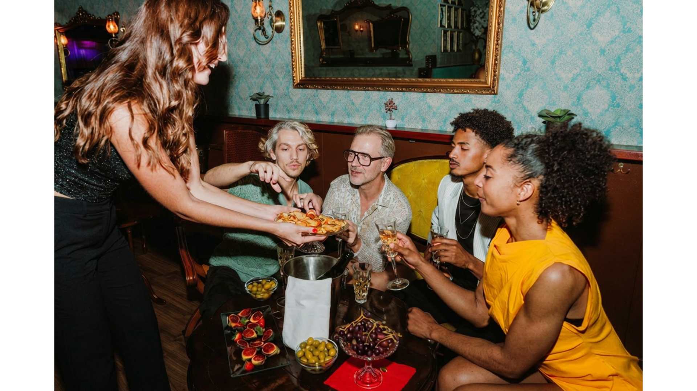

A 30-day social longevity journey built around small Circles, shared practices and meaningful connections.
It grows through small daily practices, meaningful relationships and a sense of belonging.
That's why we created The Good Span. Not simply to help people live longer, but to help make the span of life healthier, richer and more meaningful — bridging together health and purpose, individual wellbeing and collective support, science and everyday life.
Through The Circle.
Through The Seasons.
Through The Gatherings.
Through The Evidence.
Together, they create more years that matter.
Living well isn't about perfection. It's about showing up, consistently.
Discipline isn't restrictive. It's the small choices that compound over time.
Relationships are one of the greatest predictors of a long and fulfilling life.
Ageing isn't something to fight, but something we can approach with intention.
Lasting change rarely happens alone.
The Good Span exists to help people live longer, and make those years healthier, richer and more meaningful, together.
When you join a Season, you're placed in a small Circle of five to seven people you haven't met. The practices are how we begin. The Circle is why we keep going.
A group small enough to be known, drawn together for one Season.
Trained to guide, share expert insight, and keep the Circle warm.
You meet each week to share practices, progress and challenges, and stay close between.
No streaks or scores, just people who notice, and keep you going.
Because longevity isn't built through one habit. It grows through sleep, movement, nourishment and mind, and the people who help us sustain them.
Every Season focuses on one pillar of longevity. Together, they create the foundations of a longer, healthier and richer life.
Better sleep isn't just about more hours in bed. It's how your body repairs, your mind resets and your energy returns. Small improvements at night shape how you show up every day.
I want to start here →Movement doesn't have to be extreme to change your life. Walking, strength, stretching or simply moving more often, all help you build vitality that lasts.
I want to start here →When we create space to breathe, reflect and slow down, we respond with greater clarity, resilience and presence in our work, our relationships and ourselves.
I want to start here →Eating well is about more than nutrients. It's about creating energy, finding balance and sharing meals that bring people together.
I want to start here →Not sure which one is right for you?
Take the quiz to find your focus →At the end of every Season, you receive a Marker, a small physical symbol of the journey you've completed together.
As your Seasons add up, so does your collection of Markers, a lasting reminder of the habits you've built and the people you've shared them with.
Longevity isn't built from one habit alone. Sleep, movement, food and mind all shape each other, so completing Seasons across the four pillars is what compounds into a longer, fuller life.
Because some progress deserves more than a number on a screen.
Take a short quiz to discover what matters most to you right now.
We'll match you with a small Circle of people with similar goals and recommend science-backed practices for the month.
Support each other for 30 days as you build healthier habits, one day at a time.
"Accountability got us started. Friendship kept us coming back."

When your thirty days are done, everyone who completes the Season comes together for a closing gathering. You connect with everyone in your Seasons, and mark the journey you've made together.
It's where a month of practice becomes faces, names and shared stories — the people you keep, long after the Season ends.
Join your first Season, meet your Circle, and begin thirty days you won't walk alone.
Take the quiz →